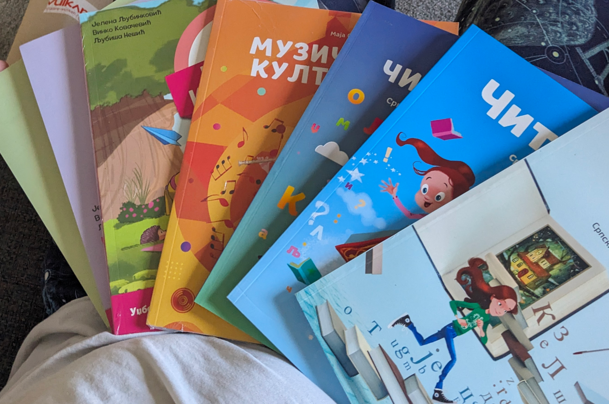
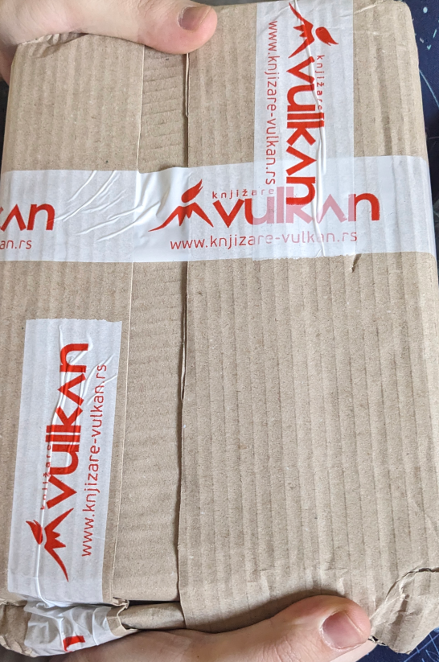
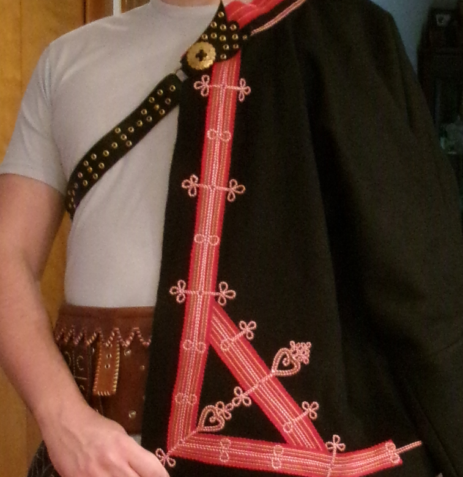

I wanted to try learning Serbian from kids' schoolbooks for a more
'natural' approach to language now that I've got the basics of Serbian
down. This should help me expand my vocabulary! Luckily, Vulkan has a
section for kids' textbooks, and I ordered 10 with DHL express shipping
for about $120. This is super cheap even by domestic American standards.
I couldn't be more satisfied with my purchase and how quickly it got
here!


I was looking for a place to find a kabanica -- a traditional
Yugoslavian folk jacket -- but options are shockingly limited. Many
stores exist, but very few operate on the internet. That's a shame. One
that's out there is Margaret-Design. They specialize in Slovakian
national costume, but their version of the kabanica is
just about the same as the Yugoslavian variant ( perhaps with a
touch more decoration! ), so I pulled the trigger. It took some doing:
we had to do a bank transfer, which was terrifying, because I'd never
done it before. No less, the money landed and the most beautiful jacket
I've seen arrived a little while later. You can find my specific jacket
here, but there is another, less decorated one available
here
here as well, seemingly available on-request. I can strongly recommend
this site!

~
serbianshop.com
VERDICT - LEGIT / RATING -
10
So, my dad is from former Yugoslavia, and I'm trying to learn the
language. Suffice to say there are not very many resources. I've been
doing OK so far, but thought it'd be a good idea to get some childrens'
books. Along comes
serbianshop.com, which made me
nervous from the second I landed on it. I got to the payment method and
my options were PayPal or 'some obsucre Italian Bank'. $80 in! What
comes out? A month later, I'm sitting at my desk... programming. Ding
dong! ??? I wasn't expecting any visitors. There it is! A mail carrier
with a package that says 'BEOGRAD' in the top left corner. I'm
very happy with my order, and I can't wait to buy even more
books, flutes, toys... hats... vests? Shoes? What don't they have?